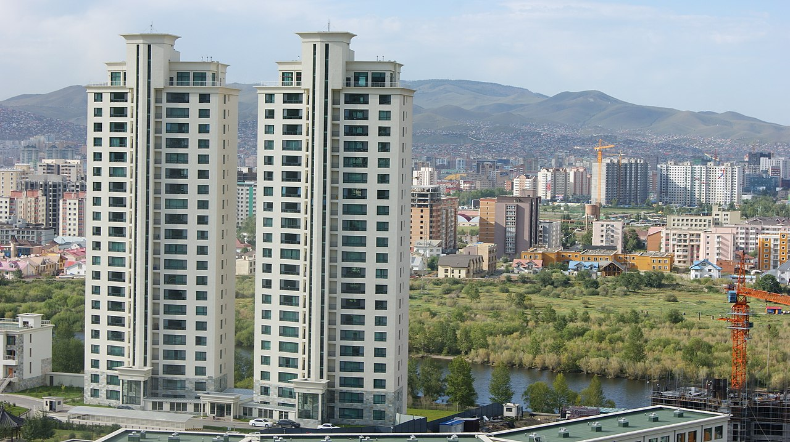

Economia
Capital: Ulan Bator
A Mongólia possui um Produto Interno Bruto (PIB) de 15,83 bilhões de dólares, segundo dados do Fundo Monetário Internacional (FMI). Aproximadamente 40% do PIB do país é oriundo do comércio exterior, que, junto dos investimentos estrangeiros, tem enorme importância para a economia de modo geral e para o abastecimento interno, isto é, para o mercado doméstico. A economia da Mongólia é baseada na produção agro-pastoril, com 90% das exportações constituídas de animais e derivados, mas muito limitada pela distância da Mongólia do mar, e pelas precárias estradas sem infraestrutura. A grande dependência de ajuda estrangeira levou o país a uma preparação inadequada para os rigorosos invernos, e houve grandes perdas de animais, o que empobreceu a muitos.A ajuda soviética, que chegava a quase 1/3 do PIB desapareceu quase do dia para a noite em 1990 e 1991, ano do desmantelamento da URSS. A mudança da economia centralizada e dependente da URSS para uma economia de mercado foi traumática. Na década seguinte o país enfrentou uma profunda recessão devido à inatividade econômica e aos desastres naturais, e posteriormente um crescimento econômico devido às amplas reformas econômicas, com adoção do livre mercado e privatizações. Apesar disso, quase um terço da população vive em extrema pobreza, e a economia continua defasada. Também é importante a criação de ovinos, caprinos e equinos. Merece destaque a mineração de estanho.
O país exporta principalmente recursos mineiras como:
- cobre;
- carvão;
- ferro;
- ouro;
- petróleo cru.
Em contrapartida o país importa principalmente produtos como:
- petróleo refinado;
- carros;
- tratores.
Além disso, seus principais parceiros comerciais são:
- China;
- Russia;
- Japão;
- Coreia do Sul.
A indústria da Mongólia, que corresponde ao setor secundário, é
voltada sobretudo à transformação dos produtos oriundos da mineração
e da atividade agropecuária, destacando-se a produção mineral, de
alimentos e bebidas, a confecção de tecidos e fibras naturais e o
processamento de produtos animais. Além disso, tem destaque o ramo
da construção civil.
O setor primário aloca a segunda maior parcela da mão de obra da Mongólia,
de 31,1%, enquanto pouco mais da metade da mão de obra do país está
empregada no setor terciário. Do setor primário são derivados, além
de derivados da exploração mineral, produtos como:
- Carne de carneiro;
- Leite de ovelha;
- Carne e leite de bovinos;
- trigo;
- cenoura;
- Nabo;
- batata;
- carne de cavalo.